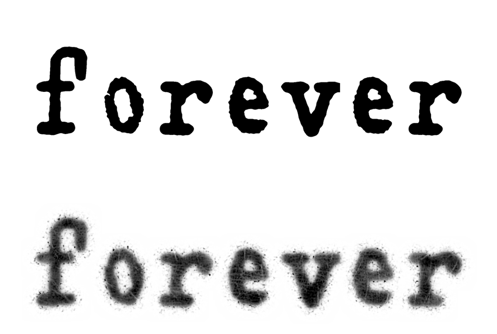

LaFleurStudio · 2026
THE FOREVER FONT
Le flou exact de l'encre, gardé dans la police : le trait bave, l'encre est plus ou moins chargée, et de petites taches entourent chaque lettre.
Des lettres tirées de tatouages et d'une machine à écrire, en chasse fixe, avec trois versions de chaque signe qui tournent toutes seules.
Testeur
Clique sur le texte pour écrire le tien.
Astuce : The Forever Font existe en deux versions, selon ton logiciel (voir « Quelle version ? »).
Caractères
Majuscules, minuscules, chiffres, ponctuation et symboles, avec les accents du français, de l'allemand, de l'espagnol et du portugais : 161 signes.
Comment on l'a faite
The Forever Font est fabriquée en Python : les lettres sont relevées, mises au même style, puis le flou de l'encre est mesuré et posé sur chacune.
Des lettres tatouées
Tout part de deux tatouages écrits dans une police de machine à écrire. Les lettres sont redressées, puis leur forme nette est retrouvée sous l'encre qui a bavé.
Le tatouage passe en premier : quand il a la lettre, c'est elle qu'on prend.
Une machine à écrire pour le reste
Les autres lettres, les capitales, les chiffres et la ponctuation viennent d'une vieille machine à écrire. Elles sont mises à la hauteur, à l'épaisseur et aux longues tiges des lettres tatouées.
Le 1 et le 0, absents de la machine, sont faits avec son I et son O. Les signes qui manquaient (@ # € $ œ ß « »…) sont montés avec ses morceaux : le « est un ^ couché, le ! une apostrophe allongée sur un point.
Le flou exact de l'encre
Le flou est mesuré sur l'encre sous la peau : un flou étroit et un flou large mêlés, des zones plus ou moins chargées, le grain, et un halo de petites taches qui s'éclaircit en s'éloignant du trait.

Les mesures
Toutes les valeurs sont prises sur l'encre, en hauteur des minuscules (la hauteur du x).
| Mesure | Valeur |
|---|---|
| Flou étroit | 2,4 à 3,4 % |
| Flou large | 7,3 %, 40 % de l'encre |
| Taches autour du trait | jusqu'à 20 % |
| Zones plus ou moins chargées | ± 9 % |
| Capitales à 700 unités, minuscules à 426 (1000 par em). Chaque signe a sa chasse : 488 unités. | |
Trois versions de chaque signe
Chaque signe existe en trois versions : l'encre plus ou moins chargée, le flou plus ou moins large, la lettre qui bouge d'un poil, comme la frappe d'une machine.
Elles tournent toutes seules, même d'un mot à l'autre : deux e côte à côte ne sont jamais pareils.
Une police en images
Le flou ne peut pas se dessiner en contours : chaque signe est une image, rangée dans le fichier en trois formats, pour Apple, pour Adobe et Firefox, et pour Windows et Android.
L'encre est noire et sa couleur ne se change pas. Les logiciels qui n'affichent pas les polices en couleur montrent la forme nette.
Quelle version ?
The Forever Font existe en deux versions. Elles n'ont pas le même nom : tu peux installer les deux.
Les images des lettres, avec le flou, le grain de la peau et le halo de l'encre. La plus fidèle au tatouage.
Télécharge celle-ci pour les sites web et les apps du Mac (Pages, Keynote, TextEdit).
Pas pour Illustrator, Photoshop et InDesign : ils n'y montrent que des lettres noires, toujours la même version.
TheForeverFont.zipLa police en TTF + licenceLes mêmes lettres, dessinées en vecteurs : l'encre en huit couches de gris, et les trois versions de chaque signe.
Télécharge celle-ci pour Illustrator, Photoshop, InDesign et Word.
Dans Word et les logiciels sans couleur, les lettres s'affichent en noir, et les trois versions tournent quand même.
TheForeverFontVecteur.zipLa police en TTF + licenceLa différence : The Forever Font range des images des lettres dans le fichier, mais les logiciels Adobe ne savent pas les lire. The Forever Font Vecteur redessine ces mêmes lettres en tracés : Adobe les affiche en gris, et les logiciels sans couleur les montrent en noir.
Pour voir le gris et le halo : rien à cocher. Choisis bien « The Forever Font Vecteur » dans la liste des polices (un petit logo SVG est à côté de son nom). Il faut au moins Illustrator 2018, Photoshop 2017 ou InDesign 2019 : les versions plus anciennes montrent seulement les lettres en noir.
Pour que les 3 versions tournent, la fonction « Variantes contextuelles » doit être active :
- Illustrator : Fenêtre › Texte › OpenType, coche « Variantes contextuelles ».
- Photoshop : Fenêtre › Caractère, menu ☰ du panneau › OpenType › « Variantes contextuelles ».
- InDesign : Fenêtre › Texte et tableaux › Caractère, menu ☰ › OpenType › « Variantes contextuelles » (pas toujours cochée de base).
- Word : Format › Police › Paramètres avancés, coche « Utiliser les variantes contextuelles ».
- Pages, Keynote, TextEdit et le web : rien à faire, ça tourne tout seul.
Télécharger
Usage personnel : gratuit. Projets perso, études, essais, maquettes.
Usage commercial : sur autorisation. Logo, client, produit vendu, pub, site d'entreprise… écris à info@lafleurstudio.ch. Chaque projet est étudié : l'autorisation peut être gratuite ou payante.
Revente, partage des fichiers et modification interdits sans accord. Texte complet : LICENCE.txt.
Installation sur un site web
@font-face { font-family: "The Forever Font";
src: url(TheForeverFont-Regular.woff2) format("woff2"); }
/* Les 3 versions de chaque signe tournent toutes seules ;
pour les couper : */
.une-version { font-feature-settings: "calt" 0; }